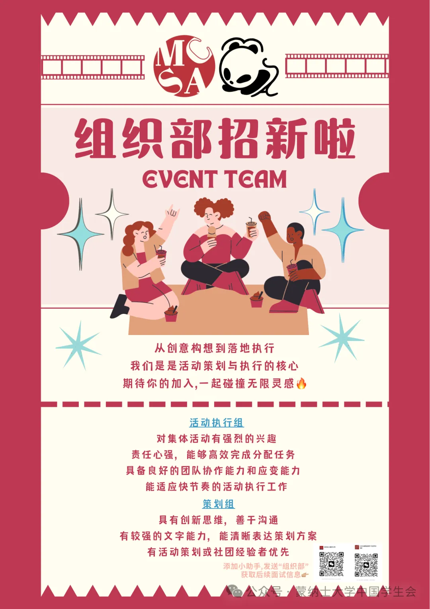
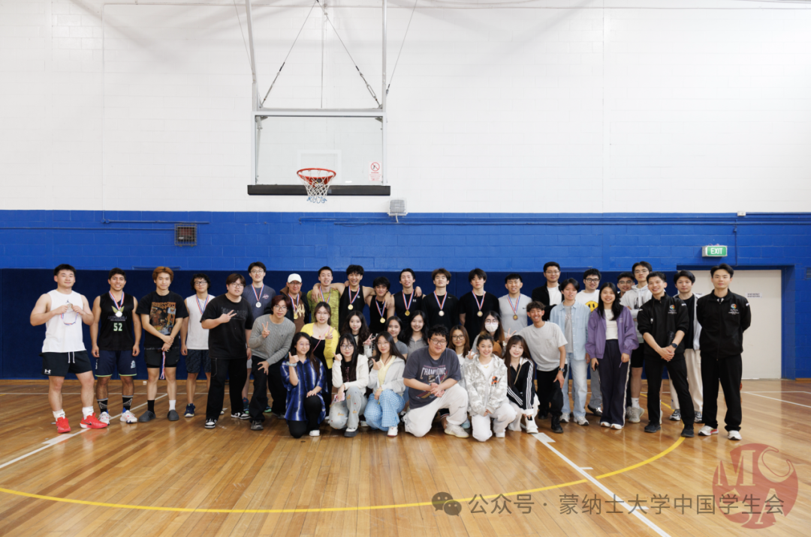
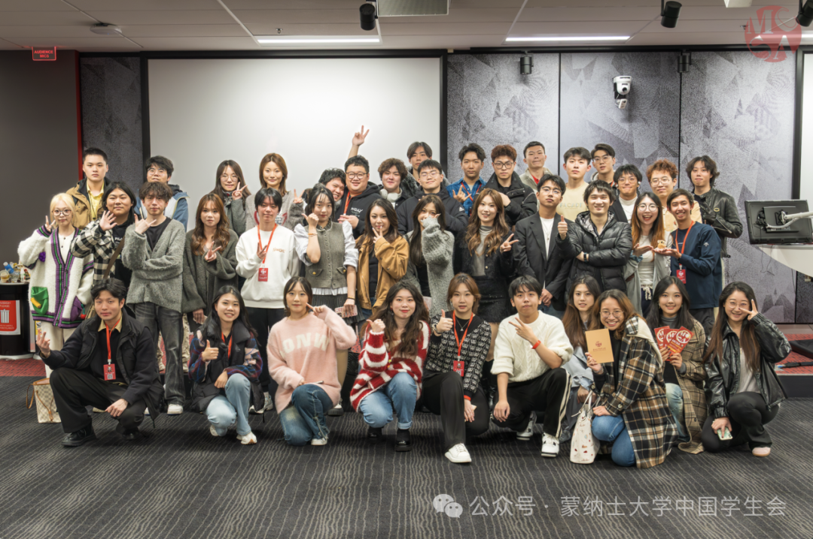
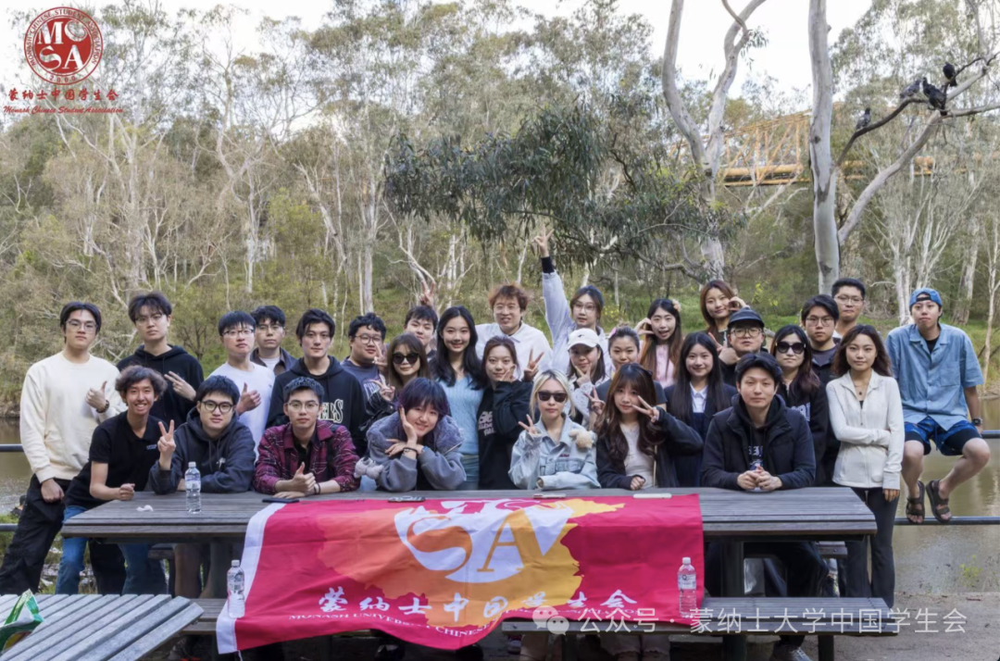
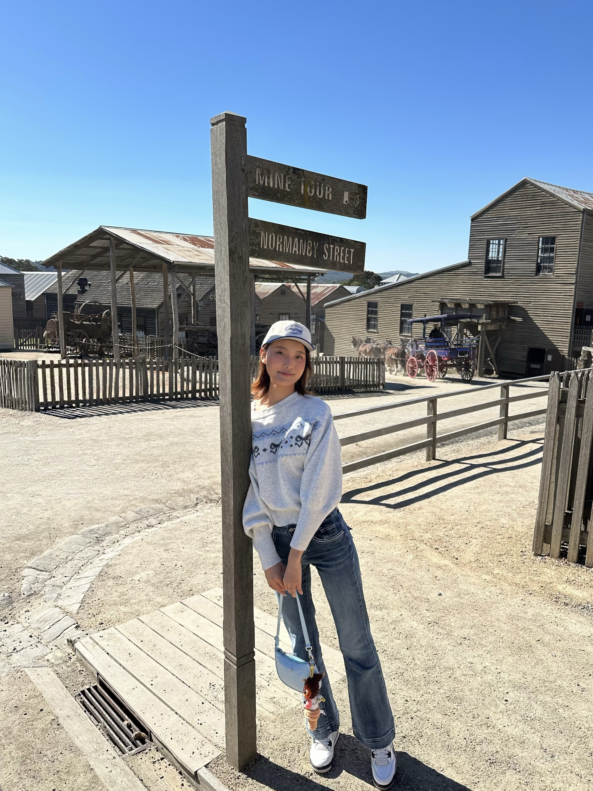
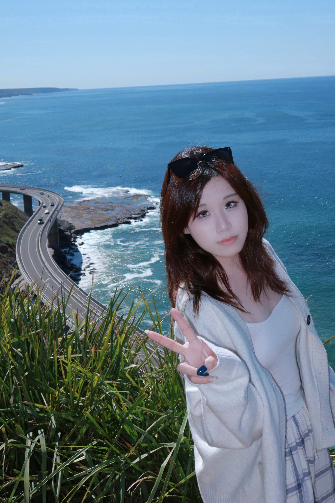
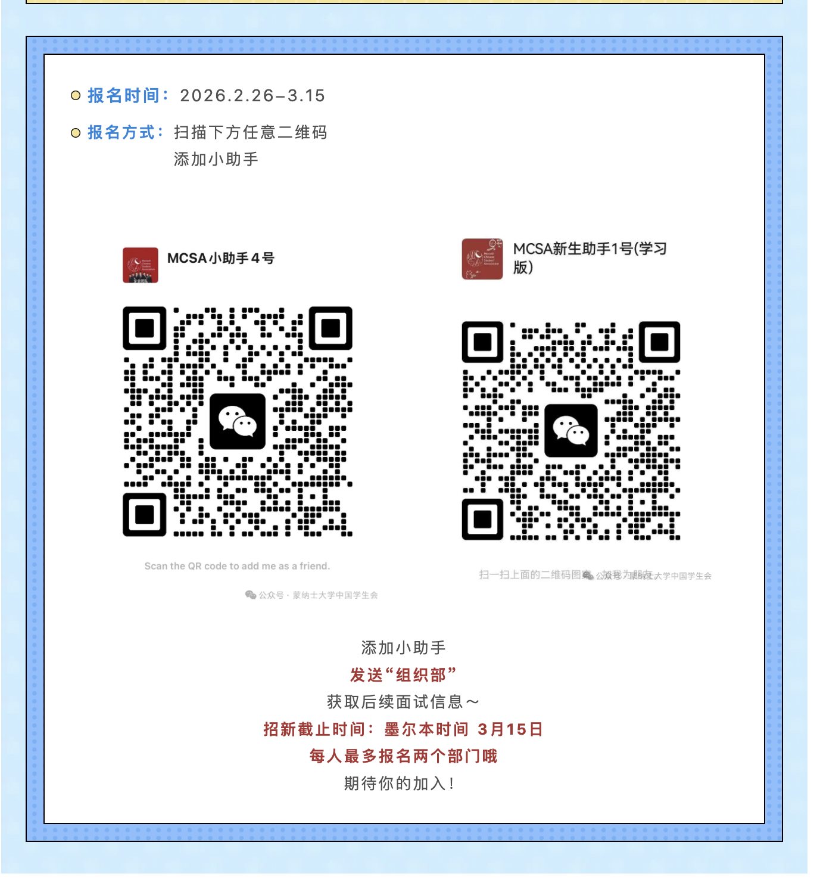

Organisation Department
Past recruitment round · 26 February–15 March 2026 (Melbourne time). Applications for this round have closed. Follow the official WeChat account for future announcements.

About us
Big ideas. Unforgettable events. A team that makes things happen.
We design MCSA events and bring them to life. From the first spark of an idea to delivery on the day, the Organisation Department puts its energy into every experience.
From lively Welcome Parties to action-packed badminton and basketball competitions, we plan and deliver campus events of every size.

Bring your ideas to life while developing your planning, communication and delivery skills. Work alongside dependable, enthusiastic teammates, learn together and build lasting friendships.
Wherever there is an event, you will find our team. We work at the heart of the action, bringing energy to each event and creativity to every stage.
The stage is set. Join the Organisation Department and help create what comes next.

Daily life

Messages from the Department Leaders
Head of Department
汪晓雅 Jasmine

Welcome to our Organisation Department utopia! We welcome fresh thinking and bold ideas. Let’s turn imagination into reality and everyday work into something creative.
Deputy Head · External Affairs
刘星烨 Vivian
Bring your care and enthusiasm. Together, let’s keep our work running smoothly and make this a warm, welcoming team.
Deputy Head · Internal Affairs
Jocelyn 钱语涵

Wishing you the courage to move forward in the year ahead and follow your dreams wherever they take you!
Our core teams
Planning team
Every day brings creativity and delivery together.
The planning team starts with brainstorming, sharing ideas and shaping an event people will want to attend.
Once the direction is agreed, the team develops the programme and budget, working through the details.
Members coordinate resources, publicity and partners across departments. As the event approaches, they track progress and adjust the plan to keep delivery on schedule.
Event delivery team
The delivery team turns carefully planned ideas into real experiences.
From rehearsals to venue setup, members coordinate every step. On the day, they welcome guests, check equipment and keep the event running smoothly.
When something unexpected happens, the team stays calm and responds quickly.
Seeing an event you helped create come together is a reward like no other.
Role requirements
Planning team
- Develop event concepts and write proposals.
- Coordinate resources and manage the event programme and timeline.
- Work across departments to turn plans into delivered events.
- Take responsibility for event outcomes and presentation quality.
Event delivery team
- Coordinate delivery on site and keep the programme running smoothly.
- Help prepare rehearsals and support the team leads.
- Respond quickly to unexpected situations on the day.
Interview preparation
Team allocation is based on your CV and interview. Prepare: • Your CV • An event proposal (for the planning team) • Plenty of enthusiasm and imagination
What you can gain
Hands-on experience Help build an event from the first idea to delivery and see your creativity make a difference.
Member benefits Access association resources and partner discounts described in the recruitment article.
Connections Meet students across disciplines and learn from experienced peers.
Past application instructions
Past recruitment round · 26 February–15 March 2026 (Melbourne time). Applications for this round have closed. Follow the official WeChat account for future announcements.
The original article instructed applicants to add an MCSA assistant on WeChat and send “组织部” for interview information. Applicants could apply to at most two departments. The QR codes below belong to that closed recruitment round.
